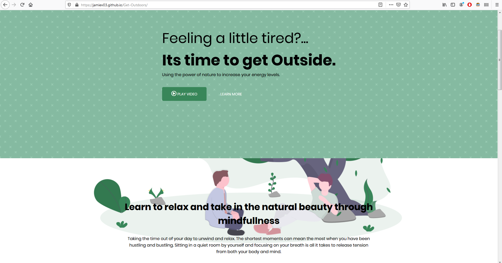

A mock up website that I created using newly learned skills which include Sass, Flexbox and BEM. Developed with simplicity in mind I started with a basic nav, header, section and footer. Set up Sass environtment and created folders to clean up scss files. Knowing what was going onto the page first help with file creation. Defined a general color palette and created variables accordingly. Using a general section scss file I defined similar styles for each heading such as h2, padding and font-size. Next I created a 3 card set up using flexbox which include an image, header and text. Lastly to make the page responsive I set up a media queries file which allowed me to easily insert the breakpoints when required thanks to Sass.
Learning Sass allowed me to clean up my css and make it easier to work with on a larger project. I found the nesting to be beneficial in following classes. Having the ability to create reusable css is a game changer. Using the BEM architecture and having descriptive class names I could also see how this would make it easier for others to read your code.
I came across some difficulties in this project due to not fully understanding some key components. I found working with SVG images were not the same as JPG or PNG. I had over complicated my 3 card set up by introducing set widths. This made responsive design overly complicated as well.
In all I found it enjoyable to learn these technologies used by proffessionals and to actually put them into play.